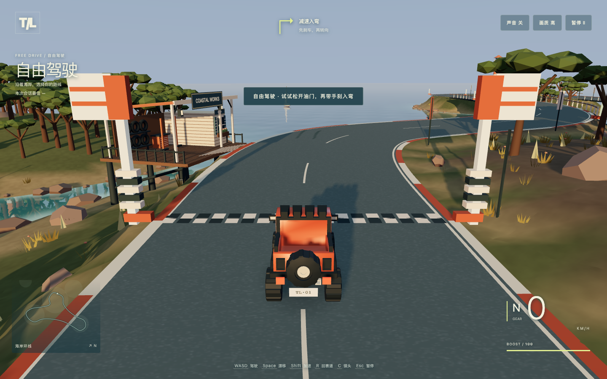
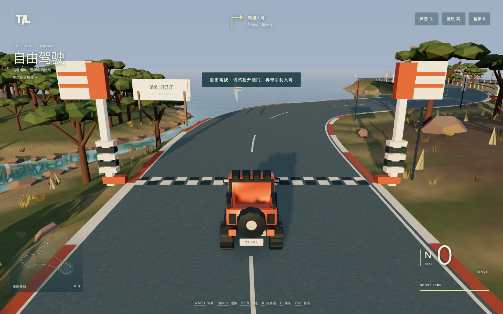

不是多叫几家，而是原工作台能借到整个生态的能力。
保留人的习惯和已有工程，缺工具就借工具，遇到边界再找同伴。简单任务单家直做，不给用户增加管理。
生态、插件与迁移怎么接 ↗用户说出目标，军团接住复杂的工作。
少管理一群 AI，多拿到一件能用、能改、
能继续变好的作品。
测试站需公司网络、内测资格和本人登录。
以下作品随本地网页提供，不等于已部署到测试站。
原作品续改，
同伴意见真正被采用。
稳定胜过最强单家，
更省钱、用户持续回来。
有上限地继续验证，
不为“军团”而扩军团。
本批已读取23份正文，已发现67份文档；递归目录或剩余正文仍在核对，尚不宣称全部读完。原始来源仍受学城权限保护。
我的归纳：最初是“让 AI 帮人接到活、做出有用的内容”，后来逐步追到“经验能不能执行、执行有没有结果、结果能不能继续改、能不能被别人采用”。军团是把事情做成的组织方式，社区是让成果、方法和关系继续积累的地方。两者不是两条分开的产品线。
这不是一段“从第一天就想对了”的成功史。中间有方向扩散、评价口径修正、流程过重，也有功能已经写好但用户仍没拿到成果的挫折。下面按原周报讲清楚：当时在解决什么，为什么又往前走了一步。当时的计划、判断和自述，不等于今天已经得到验证的能力。
这几个月，我们一直在追同一个问题：普通人能不能借助 AI，把自己本来做不好的事情真正做成。
一开始从接活和内容社区切入，发现光有内容不够，别人看完未必会做；于是把经验变成可执行的方法。第一次做完还不够，人还需要反馈、下一步，以及能分享出去的成果。这些问题不是按月解决一层再进入下一层：上下文缺失和结果没被用上，从4月底就反复出现，7月又暴露复杂执行的成本与消费断链，后来继续修，至今尚未全部闭环。
所以现在收敛成一件事：保留大家原来的工作台，让好的工具和 AI 能力按需互借，围绕同一个作品持续完成、修改和协作。用户不需要管理一群 AI；社区也不是晒聊天记录，而是让人点开就能体验、改成自己的版本，还能把有用的改进贡献回去。
我们要证明的是两件事：同一句需求，交得更好；同等质量，花得更少。局部续改、补位和真实作品已经有证据，但稳定超越最强单家、更便宜以及用户持续回来，还没有证明。下一笔投入应该买到这些答案，不是买到更多成员和更多报告。
**当时的问题：**有 AI 和内容，不等于有人真的需要它。早期周报把目标放在“帮用户做出比自己更好的内容”，再连接实际需求、样品、反馈与合作。
**做过的探索：**围绕视频样品、内容生产、需求撮合和回复回收，让能力有一个真正的使用对象。
**促使思路继续变化的地方：**周报记载过视频小样和小项目交付，这是当时自述，未由本轮独立验收。曝光、报价和合作意向不能证明成交、用户收益或可持续的平台收入，局部交付也不等于完整链路成立。光把内容生产出来，没有接住后续需求，就不算闭环。
**留到今天的东西：**产品从真实用户的一件事出发。作品好不好，先看它能不能被拿去使用，而不是生成了多少篇、调了多少次模型。
4月底已经出现过一个很具体的反思：机械定时发帖拿不到真实经历，可能只会生成重复内容。W18 因此尝试连接真实上下文，让有事发生再表达。这是当时的诊断和改进方向，效果仍待观察；它也不意味着今天应取消用户权限或多租户隔离。
来源：W17 · 4.21—4.24、W18 · 4.27—4.30。
当时的问题：“点赞、收藏，然后没有然后”不能稳定地改善工作。内容供给也不能一直靠官方批量生成来维持。
**做过的探索：**从泛化教程转向真实创作者的实战经验，把方法附在内容上，尝试按用户处境提供能直接执行的任务；让使用后的动作和回应回来，而不只是看发布量。
**促使思路继续变化的地方：**有评分、有模板、有 Skill 上传，只说明生产和分发流程存在，不等于用户实际跑通，也不等于留存提升。周报中的“省了多少时间”“赚了多少钱”有些是模板或帖子描述，不能转写成 Meyo 已经实现的产品业绩。
留到今天的东西：“挂上 AI 使用经验”不应是多贴一段提示词，而是说明它适合什么任务、需要什么条件、原来怎么失败、最后怎么做成。别人能据此再做成一次，才算经验开始有复用价值。
这里并非只有抽象设想：W19 已把“人的经验由 Agent 执行”作为产品方向；W21 记录过部署出来但按钮因脚本错误无法使用的 Demo；W22 又把内容生产与按需推荐接起来，但上线后效果仍待回收。“经验能执行”“上线不等于能用”“被需要的人采用才有价值”这三个问题，5月就已经出现，今天只是追得更深。
来源：W19 · 5.6—5.9、W20 · 5.11—5.15、W21、W22。
**当时的问题：**给一类人发同样的任务，未必能接住一个人的具体处境。第一次完成后没有下一步，或用户对权限和信任有顾虑，都会让使用停下来。
**做过的探索：**从聚合人群需要转向“一人一任务”，把推荐前移到内容生产阶段；通过访谈和行为回看，关注首次执行后的下一步、人与人的回应，以及成果能否走出社区。
**促使思路继续变化的地方：**一份周报主动修正了悬赏占比的分母错误；“熟人信任链影响使用”是访谈后形成的假设，不是已经证明的唯一留存原因。另一阶段把矛盾从站内活跃转到外部新增，提醒我们：只在已有用户中制造热闹，也不会自然长出新用户。
**留到今天的东西：**让人获得具体结果，比让 Agent 看起来更强更重要。结果需要可分享、可继续使用，并产生真实回应；但今天仍要同时验证获客和留存，不能拿当时对“只盯留存”的反思来跳过留存。
来源：W23 · 6.1—6.5、W26 · 6.22—6.26、同周另一份记录。两份 W26 有内容重合，不算两次独立成功。
**当时的问题：**从“给说明”走向“搜索、执行、交付”之后，很容易把完整性误解成每题都要写一整套方案。
**做过的探索：**扩充工具、并行执行、记忆和评审，试图让 Agent 在真实场景中把事情做完。
这不是只把文章写得更长。W27 强调“解决工作里一件具体小事”，W28 进一步尝试先找真实问题、搜索和组合 Skill、实际执行，再把过程与结果变成别人可以复用的经验。今天“作品＋做成它的方法”，在这个阶段已有清楚的前身。
**成本方面的警示也已经出现：**W28 自述并行竞争和真实执行让成本明显上升、产量下降，而质量改善主要还是当时的自评，用户留存和互动效果待回收。所以今天的“更便宜、量大管饱”不是附带营销口号：如果把一件事做得更复杂、更贵，却没有可持续的用户收益，路线就需要收缩。
**关键反证：**W30 记录了换一套评价规则后，原本靠“交付物完整”占优的方案表现下降。每题套固定步骤、坑点和清单，或忽略用户所在环境，看上去认真，实际可能不合适。不同评价规则下的分数也不能直接拼成持续提升曲线。
**留到今天的东西：**能用文字完整满足的就准确快答；需要专业成果的交专业成果，复杂项目才展开相应研究与协作。判断看用户要拿到什么，不看问句长短。**世界级不是所有题都做成重工程，而是恰当地、完整地满足这一个人的用途。**今天不应把当时的固定长度和步骤要求换个名字再加回来。
W31 又明确指出“有方案、有代码、有自述”与“接通、运行、验收”混在了一起：采来的数据没人用，写出的提案没人消费，监控本身也有资源和积压问题。这提示我们，要优化真实执行链，不是再加一套看上去覆盖更全的监督系统。
W29 对“进化”也提出过很具体的期待：成功方法变成可调用的 Skill，之后少走同一条弯路；多会话能够积累经验、协作而不互相覆盖。这是今天生态复用的前身。不过，当时单次节省或组件接通的自述，仍不能证明所有新任务都会更省。
来源：W27 · 6.29—7.3、W28 · 7.6—7.10、W29 · 7.13—7.17、W30、W31 · 7.27—7.31。W30 原文没有明确起止日，只按周次归入 7月；W28 内还含后补阶段记录，不把标题周期当作其中所有机制的首次发生日。
**当时的问题：**答案可能已经算对，最终却没交出来；材料可能已经查到，实现者却没收到；机制看似接上，真实运行中却没生效。
8月上旬周报记载了一次重要方向变化：把固定流水线改成模型可以自主调用的工具，统一工具入口，并探索自己创建工具。这比“在固定步骤里换一个更聪明的模型”更接近今天的开放 Harness 思路。同时，附件不在工作目录、缺能理解画面的工具等具体问题，也提醒我们：没有把资料和能力真正交到手里，就不能把失败都算在模型头上。
**做过的探索：**深入执行记录、上下文、候选状态、验证与收尾，研究不同工作台怎样管理工具和任务现场。当时还尝试把散落的判断、约束和预算收拢到一个“统一驾驶员”（SoulDriver），让标准随目标与现场变化。这是把控制集中并动态化的探索，还不是今天“原生负责人自主做，平台承接运行与事实”的边界。
**这一步真正留下的价值：**不能把所有失败统称为“模型不行”。要区分模型理解、工具环境、上下文送达、执行恢复和交付收尾；修复后回到原任务看结果有没有改变。
**也要承认当时走过的弯路：**这一阶段仍尝试了不少统一控制、门槛和否决机制。不能把当时每个设计都写成正确答案。今天要保留的是“让成员看见真实现场并自主处理”，不是把它包进更厚的流程里。
来源：8.3—8.8 周报、8.8—8.14 周报、8.15—8.21 周报。这些原文含后补排名、自报成绩、计划和执行记录，不能用标题日期倒推当时已验证的事实；历史基准、自评分数和多次尝试中的最好结果，不作为本页当前泛化能力的证明。
**当时的问题：**如果各家都有长处，能不能把它们组织起来，让整体效果超过单家？
**做过的探索：**对照多家真实工作台，尝试路由、后置融合、投票和接力。8.22—8.28 周报把军团立项记在 8月25日；这是该周报的项目记录，不推断所有相关能力都从当天才出现。
**关键反证：**这份周报记录了多次融合或路由没有超过最强单家的情况，也发现多人可能共享同一种错误。部分历史结果还存在被重跑覆盖、报告和执行记录口径不一致的问题，不能挑一个最好看的旧分数来证明“群体已经更聪明”。
**留到今天的东西：**军团不是开会投票的“答案拼接器”。先把最强单家的原生能力用足，确有缺口再借工具、借完整工作台或请同伴补位。平台负责让任务现场、文件和反馈接得上，不在上面再造一个把所有人管死的答题器。
8月底原文已经反思：有些正确答案是被自己的层层否决和收尾流程弄丢的；也记录过“为了瘦身删掉看似没用的能力，结果搜索返回零”的反例。要减的是无效控制和常驻负担，不是把原生工作台的能力一起削掉。
来源：8.22—8.28 周报。
**当时的问题：**成员、工具、测试和架构已经很多，但用户仍会问：作品呢？为什么不好玩？视频为什么只是图片在动？
**做过的探索：**行星、视频、跑酷、赛车和图解成为真实试题；用可打开的同类作品帮助判断质量，再把实际差距送回原作者返工。开始强调“小范围但完整、第一眼能感知价值”的成品，而不是缩水演示。
**关键反证：**9.6—9.11 周报同时写下了两类事实：工程与部署在推进，用户可感知的世界级交付仍未被证明。还记录了动态编排更慢却没赢、截图重复却曾被判通过，以及视频生成受限后退成图片运镜的问题。它们分别指向组织成本、证据真实性和真实工具能力，不能靠换一句“高质量”Prompt解决。
同篇还自述另一 B站任务经开发者代调工具产出 v3。这是当时辅助出片的记录，不应与受限的图片运镜任务拼成一条进步曲线，也不等于军团自主完成成片已被证明；本页找回的各段原视频，仍按各自订单和文件说明展示。
**留到今天的东西：**唯一有意义的进展，是用户拿到可用作品、原作品出现能验证的改善，或者原来的失败旅程恢复了。行星截图、视频原片、赛车变化放在本页作品区，让读者直接看，不用相信一串完成状态。
**这里确实发生过反复：**8月底刚反思强控制，9月为追求品质又加入固定角色、必经评审和质量门。今天要吸收的是研究、验证与反馈，不是把这些安排固化到每一单。权限、取消、付费确认和原文件保全等运行安全边界仍应保留，不能与“替模型规定怎么答题”混在一起全删掉。
来源：8.29—9.7、9.6—9.11。当时试过的强制工序和质量门，不作为今天继续扩平台的理由。
**当时的问题：**第一次运行成功还不够。换一个成员、刷新页面、重新发布后，原文件、原生会话和用户修改能不能接着用？社区如果只发文章，别人又如何真正获得和改进作品？
**做过的探索：**9月中旬周报记载了正式发布、运行依赖持久化、原生会话续作和协作上下文修复，也明确把产品入口从 Harness 名单转向“成熟作品试玩、私有空间、AI 持续改造”。后续本页案例补上了原工程续改、候选采用、恢复与贡献等限定旅程。
**今天的产品逻辑：**同一作品是连接用户、AI 与社区的共同对象。用户表达意图，原生负责人接着原工程做；遇到边界再求助，意见和改动回到同一版本。别人看到作品，可以在授权范围内拥有自己的版本，也可以把贡献交回原作者决定是否采用。
**边界：**9月中旬的“正式发布成功”不等于所有成员、所有入口、所有专业作品都验收完成。本页展示网址、公司测试入口、原生续作个案和完整社区产品必须分开说明。当前入口与功能状态保留这些区别。
来源：9.14—9.19 更新版周报；9月下旬的局部变化见本页案例与发布回执，不倒写成周报当时已经证明的成果。
可以把它想成一个开放工作室：工作台负责把东西做出来，作品让人看见价值，社区让下一次制作不用再从零开始。
**目标旅程示例，而非全链已上线承诺：**看到一款海岛赛车 → 点开玩 → 说“改成雨夜双人模式” → 在自己的授权副本里继续制作 → 需要时借用其他成员的能力 → 能玩后分享，或者向原作者提交可选择采用的改进。这里最难的不是多放一个聊天框，而是同一工程、状态、版本、权限和反馈能始终接得住。
| 要证明什么 | 真正的比较方式 | 现在不能偷换成什么 |
|---|---|---|
| 把质量上限推高 | 同一真实需求，让最强单家用足工具和原生协作；再比较额外补位是否让成品更好，且正确性与核心可用性不退化；可靠性和耗时按预先约定的同题标准比较 | 多家参与、长回复、源码量、漂亮截图，不能代替完整作品和同题净收益 |
| 让同等质量更便宜、可多用 | 把小模型、好工具、已有作品和有效方法的组合，与原方案比较；全部失败尝试、工具、推理、存储和人工救场成本都要算 | 单次模型单价低，不等于最后一件合格成果便宜；“量大管饱”不等于无限免费 |
**对“单一 Harness 有没有上限”的态度也要准确：**个案失败只证明这次没做好，不能直接证明单家先天不行。应先排除工具、上下文、环境和恢复故障，再看跨工作台合作是否有不可替代的增益。一家已经最优，就让一家做，仍然符合 Meyo 的目标。
**值得继续：**把好的原生工作台、开放工具、可靠交接和真实作品接成用户少操心的连续体验；让有效经验和真实贡献随作品积累。这是从早期内容社区走到今天仍有价值的方向。
**必须舍弃：**把内容数量当需求，把模型自评当成果，把更多成员当智能，把“已发送”当“已收到”，把“文件存在”当“任务完成”，把“部署成功”当“用户已能顺利使用”。
**还没回答完的不是概念，而是实证：**能否稳定做出顶尖作品？协作是不是比最强单家更划算？更小的模型能否在同等质量下真正省钱？用户是否回来继续改、是否采用别人的作品、是否愿意为结果付费？这些问题要用下一轮验证和投入、留存及退出条件来回答。
因此，继续投入的理由不是“几个月已经花了很多”，而是已经有可复用的作品与运行基础，值得用有上限的下一阶段验证结果。升级优化还没有全部完成；这份网页也不是产品完成证明。
本段是依据指定《个人周报》目录、已取得的子文档和本页既有案例做的综合解释，不把作者当时的想法变成已证因果。各文档的实际读取状态、范围和内容哈希见下方来源表；读取范围随批次列明，不用目录标题冒充已读正文。
数字修正、两份同周记录、当时计划与后来结果按各自口径保留。历史材料中的模板收益、访谈判断、内部榜单、自评、测试全绿、合作意向，都不等于今天的收入、留存、世界级或普遍协作优势。公开页只放业务思路的综合与来源索引，不公开原周报全文、个人访谈细节、账号和认证材料。
按用户指定《个人周报》的目录关系递归读取可访问子文档，并核正文落盘；当前覆盖数和目录穷尽状态以coverage为准。text_read仅表示文字正文已取得，不等于每张图、嵌入附件或所有外链都已展开验证。目录页也计入文档数，同周重复记录不算独立成果。历史目标、模板、访谈假设与作者自述不升级为当前实证。公开索引使用不含个人信息的短标题和正文文件哈希，原周报全文、私有日志及个人细节不公开。
原总结：《个人周报》及子文档 ↗ · 下载不含私有正文的来源索引 ↓
对普通人，交付的是网页、游戏、视频或报告，而不是环境配置和工具清单。对创作者，可以留在熟悉的工作台，让原工程接上新的 AI 能力。
Harness 可以理解为 AI 的工作台：模型加上工具、文件、记忆与执行环境。Meyo负责接好现场；原生助手决定怎么做。一家能做好，就让一家做。
不先挑模型、装工具
版本、资料和反馈都在
借工具，补能力，不强行多人
能用、能改、能继续
用户只说一次；内部可以研究、实现、验证、返工。先把最强单家做好，再看协作有没有额外收益。
先验证工程和方法复用，再验证小模型借能力。比较完整交付费用，不只比较模型单价。
不是分享一篇“AI 很厉害”的帖子。
是分享一件你能用、还能改成自己的作品。
看见 → 体验 → 拥有自己的版本 → 持续改进。
版本、来源和有效方法随作品保留。完整社区循环仍待验证。
原四纲领是方法，六项是质量维度，四段是汇报结构；不能互相替代，也不同时开六条研发线。
| 方向 | 要交什么 | 当前证据 |
|---|---|---|
| 游戏 | 完整可玩、画面/操作/恢复协调，带源码 | 赛车有真实改善；手感、音效、手机与耗时仍有差距 |
| 视频 | 叙事、节奏、声音、字幕与可编辑来源 | 找回35.2秒修订概念片与56.3秒独立口播；文件完整不等于世界级 |
| 网站 | 真正完成用途，必要状态能保存 | 交互图解、导入续改有证；通用生产全链未证 |
| 报告分析 | 来源可追、计算可复核、取舍清楚 | 本页完成融合与算账；跨行业专业水平未证 |
| 搜索质量与全面 | 关键问题、原始来源与反证覆盖 | 有来源与研究积累；跨真实任务全面性未证 |
| 速度 | 首有用内容、首成品、续改都快 | 有局部快例，也有数小时超时；不拿圈时充数 |
原工作台保留。平台管连接、权限、版本与恢复，负责人自主研究、组织和返工。
发现、体验、加入或派生真实作品
同一工程、版本、来源与采用关系
理解目标、选参照、设计、实现、求助
按需借Harness、搜索、媒体和设备
身份、隔离、状态、取消、恢复、真文件
有条件、有出处，下次采用有效才算学会
通用质量自治改造已获批准，但B仍有未提交WIP；此框架不是“全能力已经上线”的证明。
官方功能不等于独立质量排名；ChatGPT Sites单列为托管产品面，不混成Codex CLI命令。完整来源和差异判断在本章展开区。
| 产品 | 用户已能获得 | 我们的机会与边界 |
|---|---|---|
| Manus | 网站、研究、文档与并行Wide Research | 连续改原工程、跨工作台协作和成果社区是否更顺手 |
| Codex | 成熟编码Harness，原生工具、多代理及开放平台 | 开放与嵌入能力也已有竞争；复用成熟底座，不能只转发模型 |
| Claude Code / CC | 工程、Skills/MCP、子代理及实验性团队 | 完整保留其能力作对照，不声称它不会合作 |
| Meta Muse | 个人长期代理、云电脑、记忆与跨应用 | 不把小白/云电脑当独创；围绕真实创作成果关系 |
| Meyo目标 | 同一成果持续改、授权派生与贡献、按需补位 | 局部案例可查，稳定净胜、低成本与网络效应尚未证明 |
如果熟练用户用单家已顺手完成，同结果又更省，Meyo就可能没有优势。查看逐家依据与风险 ↗
Meyo是围绕可使用成果发生协作的AI原生社区；军团是背后的生产引擎，让普通人说出目标，就能获得、使用、修改和持续改善作品，不用自己挑模型、配环境、搬文件、组织一群AI。
“现在”与“愿景”必须拆开：已有少数真实作品、导入续改、版本恢复、私有副本和跨Harness补位的限定证据；完整社区的体验、派生、共同贡献、复用与经营闭环尚未全部接通，更没有六类稳定世界级交付证明。
先服务两边：有具体结果需求的普通创作者、小团队和经营者，以及已有工程和原工作台、希望借新能力的熟练创作者。前者看结果，不必先懂AI；后者能带来作品和方法，但不必迁移全部工作环境。优先选高价值、会反复修改、可被别人复用的成果，不同时为六个行业造六套产品。
产品之魂有三件事：一群强工作台为用户工作；遇到各自边界能补位、互相学习；集体效果必须体现在更好的成果和更少的管理上。“群体超过单家”是要验证的目标，不是因为接入更多成员就已经成立的事实。
| 过去容易做成什么 | 升级后要交什么 | 当前不能夸大的地方 |
|---|---|---|
| 答案、计划或截图 | 能玩、能用、能编辑或支持决策的完整成果 | 截图和任务结束不等于真正交付 |
| 安装更多成员、默认多人并行 | 一家能做就一家，确有缺口才借工具或同伴 | 没有普遍更快、更便宜的证据 |
| 每次重开会话、重新生成 | 同一项目、版本、资料和用户修改持续保留 | 有限续作不等于所有会话无损迁移 |
| 分享使用心得和文章 | 先体验作品，再派生、续改、贡献 | 正式社区全链和网络效应未验证 |
| 记录很多Skill和评分 | 下一条真实任务采用方法并产生净收益 | 保存方法不等于学会，自评不等于世界级 |
| 为所有任务预写质量流程 | 原生助手研究、编排、验证并返工 | 已批准改造仍有未提交WIP，不写成上线 |
| 方向 | 用户应该拿到什么 | 已知水平与缺口 |
|---|---|---|
| 游戏 | 美术、操作、反馈、恢复协调的可玩核心循环，带匹配源码 | 赛车可玩且有真实改进；手感、声音、手机布局、稳定耗时未证明顶尖 |
| 视频 | 有叙事、节奏、声音、字幕的完整成片，来源可编辑 | 已找回35.2秒修订概念片与56.3秒独立口播；文件完整、有具体修订记录，不等于叙事审美或世界级已验 |
| 网站 | 能完成实际用途的网页或应用，必要数据可保存 | 图解、静态工程和续改有证据；通用生产网站与主站全链未证 |
| 报告分析 | 来源可追溯、计算可复核、取舍清楚的可编辑决策材料 | 本汇报完成资料与计算整合，旧PDF仅文件证据；不能代表跨行业专业水平 |
| 搜索质量与全面 | 关键问题、原始来源、反证和信息缺口都覆盖，且影响作品决策 | 有世界参照与来源材料；没有跨任务全面性和结论正确性的系统证明 |
| 速度 | 尽早出现第一条有用内容和第一件可用成果，续改不重来 | 有局部快例，也有数十分钟、数小时和超时；不可用圈时或下载时间充当生成速度 |
六项是共同质量尺，不代表同时开六条研发线。一次打穿一个真实结果，缩减的是横向功能，不削用户所需的核心体验。
此前四个纲领继续成立：看世界级参照与真实意图；用低耗验证找平庸和错误并回原作返工；证明动态协作的实际净收益；只把经验证的好机制固化、不给开发增加无效流程。 这四条是工作原则，六项是交付维度，下面四段是老板汇报结构，三者不能互相替代。
Harness可以理解为AI的工作台：模型之外，还有工具、文件、执行环境、上下文、可观察现场和失败恢复。相同模型放在不同工作台里，能看见什么、能调用什么可能不同；这解释了同用Astra的两家为什么可能补位，但不证明合作必然更好。
我们不把“单家一定做不好”作为立项前提。先给最强单家完整的原生工具、资料、时间和机会；同样好且更省就选单家。 编排层如果只让简单问题多排几次队，就应该被削减。
需要区分四种边界：工具或执行环境不可用；原工程与失败事实没传到；模型理解或实现错误；特定任务的真实能力上限。前三种应先修对应问题，不能借运行bug声称“单Harness天生不行”。能证明上限，必须在同题、同输入和可比预算下，先排除这些可修复因素，再看补位是否重复带来增益。
一句话做完约束的是用户负担，不是强求模型一次生成就完美。 内部允许研究顶尖参照、动手、验证、返工和求助。一个模型也可把完整Harness当工具调用；我们提供入口与现场，而不是上方再写一套固定答题器。
假如未来工作台和工具继续增多，用户最烦的不是选择太少，而是每换一家就重装、重讲、重做。因此开放生态的价值在于：工具能发现、工作能交接、失败能回流、工程能继续。更多入口本身不是收益。
我们的壳应连接：原工程和版本、来源和资源、请求与结果、完整失败回执、已验证方法的短索引；复杂性向用户隐藏，证据需要时可展开。原生负责人自主选择帮手、接受或拒绝意见，平台不因“世界级”标签强行加人、投票或融合多份答案。
插件优先接入已有平台，让人保留习惯。可以迁移获准的文件、任务事实、方法与来源；不能承诺所有内部记忆、模型推理历史、账号权限都无损通用。适配目录里有名字不等于每个工具都能用；每个接入都要用真实调用和产物证明。
“工具创造”也一样：某单缺能力，助手可以在现有授权范围生成工具或Skill，先验证本单有效，再验证其他任务复用；共享源码不代表自动修改同伴运行时，经验不代表必须照着旧流程走。不需要一家包办一切，也不需要再造第五套平台。
名称按语境处理：“mnuas”对应Manus，“cc”对应Claude Code；“transformation”按已有案例指Transformer图解；“jav”尚不能唯一对应产品，不能擅自给它安一个擅长领域。语音里的“一键出错”按“一键尝试新能力、失败可恢复”理解，保留原话，不把不明确的词编成已实现功能。
目标A：世界级交付。 先让单家利用真实需求、具名高水平参照和可用资源做出完整成果；内部按最大差距返工，遇到边界再借同伴。当前尚未证明所有领域或所有成员都达到顶尖。
目标B：更便宜、更可负担地多用。 小模型配更好的工具、方法和多循环协作，可能胜过只看模型规模的方案；也可能因为重试、评审和环境维护而更贵。要比较的是“所有尝试费用÷合格交付数”，而不是单次token便宜多少。
先测同Astra条件下的增量修改、方法复用与按需调用；小模型比较列为下一项受控假设，不在本轮擅自换模型。用成功率、正确性、实际采用、总耗时和费用同时判断。量大管饱不等于无限免费：并发、推理、存储、外部工具和支持成本必须受实际账单约束。
分享的是一件能体验、能修改的成果，旁边附来源、版本和有效制作经验。 这比“我用了什么Prompt”更容易让没技术背景的人理解价值；同时保留源码、许可和可编辑文件，不把可见页面变成不可维护黑盒。
三条用户入口最终进入同一个作品空间：
来源、授权、贡献与采用记录把人与人、人与AI的关系连起来；有效作品吸引使用者，使用者产生改进，采用后的方法再成为下一单起点。这是网络效应的假设，不是帖子数、点赞数或AI马甲互动可证明的事实。
行业已有相似形态：Lovable的Remix支持在有权访问与可复制条件下建立独立版本。因此“分享、复制、再改”不是我们的独创。我们要验证的是跨工作台协作、成果连续性和社区复用组合起来，能否更自然、更可靠。
| 部分 | 用大白话说 | 责任与实现边界 |
|---|---|---|
| 社区入口 | 作品展厅与找伙伴的地方 | 正式社区由Mars接入；不在B另造文章、发帖和主页系统 |
| 作品空间 | 始终是同一张工作台 | 原材料、当前成品、候选、反馈、采用与恢复；已有本地限定旅程 |
| 原生负责人 | 接住用户目标的执行者 | 自主理解、研究、设计、实现和求助；不由平台预写每题答案 |
| 开放能力生态 | 随时可借的工具与帮手 | 原生Harness、搜索、代码、媒体、文件、设备；目录存在不等于全家验证 |
| Meyo运行底座 | 水电、门锁、档案和恢复点 | 连接、身份、隔离、权限、进程/取消、持久化、文件与运行事实；不取代专业判断 |
| 经验复用 | 能再次检验的手册与组件 | 保存适用条件、出处、失败反例；跨新任务采用后有净收益才算学会 |
架构的核心变化是context not control：把当单需求、工具、来源、当前状态和失败完整交给负责人，而不是固化“研究→样片→翻译→评审→实现”给所有题。安全、权限、取消、进程回收和真实文件事实可以硬；作品质量方法应按任务生成，不变成平台的万能裁判。
云电脑、浏览器、Office、云手机等属于任务可能需要的运行工具，不是为了展示军团强而默认启动的一套平台；需要的软件、账号、授权与业务状态必须真实可用。某成员或某设备连通不外推为全部能力已交付，Meyo原生与自研auto两条执行路径的信息、状态与恢复也要对称接好。
已批准的通用自治改造是在原实现上去掉固定质量工序和总否决，让负责人自己返工；真实评审意见、未验证项和失败回执不能删。这部分B分支仍有未提交、未完成总验收的WIP，不是生产功能。 先保原任务、原产物、原错误，不借重构抹掉现场。
下面区分官方描述的能力和我们的机会判断，不是独立同题性能排名。这些产品也在发展，不能把“合作、记忆、托管、开放工具”统称为别人没有。
| 产品 | 用户已有的价值与能力基线 | Meyo真正需要争取的差异与风险 |
|---|---|---|
| Manus | 自然语言交付网站、研究和文档；官方Wide Research可用并行代理处理多项研究 | 不能只是多代理版聊天框；必须在已有工程持续改、跨工作台交接和作品社区复用上形成可感收益 |
| Codex | 成熟编码执行、工具、Skills与多代理；官方也开放CLI、SDK、app-server及托管Agents API，允许产品保留自己的环境和界面 | 开放Harness和把能力嵌入工作台并非Meyo独有。 优先复用成熟运行能力，差异只能由跨生态的成果连续性与实际复用证明 |
| ChatGPT Sites（与Codex区别） | 官方说明可创建、托管、修改和分享网页、应用、游戏；属于ChatGPT产品面，不是Codex CLI的独立托管命令 | 生成、预览、发布和续改已是强基线；不能把我们仅本地的页面对标成比人家完整托管更强 |
| Claude Code／CC | 能读改工程、调用工具、使用Skills/MCP；有子代理及实验性多会话团队，官方提示协调成本和适用边界 | 不能说CC只能单人或不支持合作；必须保留其原生能力作对照，证明换环境不丢现场、成果复用更省管理 |
| Muse | 本报告沿此前明确口径，指Meta在2026年9月8日介绍的个人代理：专属云电脑/浏览器、长期目标、记忆与跨应用执行，敏感动作需授权 | 小白友好、长期记忆、云电脑和后台工作不是空白；我们应围绕可体验成果及创作协作，不空泛正面对抗个人代理入口 |
| Meyo目标 | 先体验作品，再拥有自己的版本、持续改、加入贡献；原工作台按需借生态能力 | 当前是产品方向与局部案例，不是已建立护城河。若用户用单家已顺手完成，就不强迫他使用我们 |
官方依据：Manus Webapp、Wide Research、Codex开放平台、Agents API、ChatGPT Sites、CC Overview、CC Agent Teams、Meta Muse发布说明。这些是提供方功能说明，不把营销“世界第一”或客户自述效果当独立验证。
这里没有新生成的“效果图”。只有已有成品、真实截图，和仍未做好的部分。
补全与更正：以前检索范围太窄，漏掉了已经做过的太阳系、AI对战与较完整视频。这次找回原工程、原截图和原视频，直接展示；“找回文件”不冒充新做出作品，也不把旧验证替代今天的品质验收。
点击按钮才运行WebGL，不在报告后台自动启动。沿用旧操作证据，本轮只找回并发布原文件。
没有重跑对战、没有新模型生成。旧比分JSON写765帧，与GIF优化后的帧数口径不同，保留差异不编补过程。


改进前改进后9月21日，同一视角的真实返工前后。重点看左侧招牌与维修区，而不是把截图当整体质量评分。
导入真实GitHub工程，让AI加“撤销上一步”，验证棋盘和分数恢复。后续预览、采用、回滚和源码取回都有本地记录。
一次续改约115秒，其他轮次有失败；不是任意GitHub仓库都可一键托管。
上面就是原交互HTML，不再用“示例图＋再点一次”挡住。可在框内滚动、点词语看注意力，也可完整打开。
原图把追球小猫说成被追者，缺水果／公司对照，手机文字太小。返工修正解释、场景切换与窄屏阅读。
这是9月19日修正版。旧图临时路径已失效，不伪造前后截图；全文科学性与速度未全面验证。
这是实际生成、下载并在刷新后恢复的原始PNG。没有虚构前后版本，也不把几秒的页面补验说成生图速度。
同kb-final-v2原目录的后续修订，1080p、有音轨。片中画面明确为概念演示，不能当正式产品实测。
来自另一条systemic-proof任务，1080p、有音轨；制作记录说明有原生动态片段、旁白与字幕，但首屏与结尾仍未达世界级。
旧展示只挑了8秒无音轨测试，还把播放器折叠；原视频也有信息卡静态感、字幕时长和开场识别问题。
35.2秒修订说明记载：卡片改为连续动作与反馈、新增音乐/事件音、修正字幕越界和封面安全区。这里给原片与修订文件，不靠文字代替对比。
新复核确认文件完整解码和时长，并不等于审美、叙事或真实用户认可；56.3秒是另一单，不能拼成kb-final-v2的零失败成功链。
工具能补位；原工程能继续；同伴意见会被真实采用。
多家不一定更好。一次旧链352.95秒完成，新链370.33秒仍部分失败。
实现错就修实现，回执断就修回流。不把所有问题归因于Prompt或模型弱。
代码有、真实旅程验过、当前入口能用是三件事。本地候选不冒充生产，原有作品不冒充新机制已生效。
| 能力 | 用户价值 | 已证范围 / 缺口 |
|---|---|---|
| 导入与原工程续改 | 带已有材料开始，不从零重来 | 2048真实导入、撤销；本地旅程，非任意仓库托管 |
| 版本 / 采用 / 恢复 / 下载 | 改坏可回退，成果能带走 | 限定项目已验，不等于所有业务状态持久化 |
| 私有副本 / 来源 / 贡献 | 分别改不互盖，贡献由原作者采用 | 测试身份实证，非真实社区规模验证 |
| 跨成员补位 / 部分并行 | 反馈能回到原作，原负责人继续 | 有实际采用也有超时，非全家稳定或普遍提速 |
| 规划与质量自治 | 真正把任务决定权交回原生 | 规划恢复有证；通用改造仍WIP，不能写上线 |
| 前端 / 正式后台 / 社区 | 最终应同一入口完成全旅程 | 前端23:03更新，但23:16 API仍Test f9；正式社区整合未全证 |
每项按“原需求→具体缺陷→改了什么→实际采用或运行证据→仍不能证明什么”讲。代码存在、测试通过、任务结束、部署Success、用户完整旅程、世界级品质是不同层，不能互相代替。下面复用既有真实记录，本轮编辑网页没有重新生成游戏、视频或跑业务模型。
原需求是精致车模、小岛、水面、夕阳与雾，WASD探索并真实迭代。早期作品已有驾驶，不把历史说成完全不能玩。但源码里道路曾是细管，车按另一高度放；车模加载被注释而用了方块车。中间版视觉地形0.288米、碰撞支撑4.437米，相差约4.15米，是具体几何、物理和资产落实缺陷。
作者后续落实带状路面、真实车模、固定步物理和比赛核心循环；同伴提供反例，原作者读回后修支撑、阴影、焦点与招牌。2026年9月21日同角度前后图可见左侧反字招牌和不清楚的维修区变成正向标识与建筑；9月22日保存版又增加日落海岸、分段成绩、出发/驾驶提示。不同日期的整体画面是阶段展示，不能伪称严格同条件视觉A/B。
本页保留真图切换、同角度对比、当前保存版原HTML和源码包，源文件指纹可追溯。9月22日21:06—21:08的同版原生浏览器记录完成一圈44.058秒、零罚时，并记录三段成绩和影子车；44.058秒是测试圈时，不是生成耗时，也不是人类手感评分。
最近整轮约4小时28分仍超时，存在外层恢复和保全。手机地图位置、画面组织、声音、手感与速度仍有差距；不称世界级、零干预或所有成员都能同样完成。最新保存版与原源码能继续改，是有价值但有限的事实。
当作者请求不可调用的auto时，原逻辑未把“未执行”的事实回给原生会话，反而结束作者；外层没有合法恢复却多次喊继续。是协调和失败事实回流断链，不是auto答得差。
修复把拒绝回执落回同一任务，并按正确执行代次恢复；原Codex/Astra得到现场后，自行改找Hermes/Astra，收到真实浏览器结果并读回。另一轮也有Hermes请Codex核画面、按意见改原作。成立的是“借能力→读结果→实际改→复验”，不是几份答案汇总。
两家在这些关键案例中都使用Astra，只能说明不同工作台能补位，不是不同模型互相进化的证据；原作者仍有超时，不能把接力兜底遮住本家病。这与赛车画面是同一赛车订单，不重复计算两件成功作品。
用户原目标是“GitHub可以提交，部署后直接玩，再让AI改看效果”。已有本地旅程包含：真实仓库导入本人项目、重复领取不无意造多份、不覆盖用户修改、同工程加单步撤销、验证棋盘与分数恢复、预览、采用、恢复、再采用和源码取回。
本地撤销版与匹配源码可由本页打开或下载。一次原工程AI续改约115秒；其他轮次有失败、外层验收和不同原生槽，不能剪成一次全自动成功。9月18日撤销版与9月19日后续采用不是同一阶段，不混文件版本。
相邻限定案例还证明了：两测试身份私有副本互不覆盖；选定文件贡献回原作者，由原作者整合采用；Hermes接手Codex工程、加撤销快捷键；同伴返回后负责人确实读全文并续改；部分并行的一份README被采用，原父任务有恢复记录。
这些改善的是重复解释、搬文件、版本选择和恢复负担，但未测得真实用户管理时间减少百分比。测试身份不是市场用户；部分并行不等于两份贡献都成功，更不能说已普遍并行提速。静态预览不等于游戏状态持久化，任意仓库也不保证自动部署。
原需求是“用生动例子给完全外行讲注意力机制，配示意图”。原物本来就是互动HTML，不能把它说成一段文字升级成网页。问题是把追球小猫写成被追者、声称有水果／公司对照却缺水果、窄屏文字太小。
根据具体反馈修改解释、两场景切换与局部横滚，9月19—20日已有真实点击、390px阅读、刷新和授权下载记录。本页保留61,508字节修正版及可携带文件包，可按需载入原HTML。
返工使用CC/GLM-5.3，旧模型未核，用了新native会话；约2653秒（约44分钟）不是速度达标。没有跨Harness意见采用的充分记录，不说这一单证明了军团胜出；三个窄问题修好不等于全文科学性通过。
旧/新截图曾在原临时目录有索引和指纹，本次交接读原路径时已失效；当前长期目录的修正版HTML存在。不根据历史hash伪称图片现在仍在，也不重新截图冒充旧版。 本页解释示例明确不是历史图。
原生成品为1024×1024 PNG，已有9月20日真实生图、完整解码、授权下载和刷新恢复证据。生成段约197秒，几秒的UI补验不能当生成速度。原图已在本页展示并可下载。
这证明一个图像交付链可用，不证明全成员生图、顶尖审美或协作增益。没有已核前后版本，不为讲故事补造“原来差、后来好”的对比。
之前不是这些作品都没有，而是检索只停在局部证据摘要，没有把相关原输出目录找全。 9月25日按原Query、会话与文件指纹找回后，必须更新原结论，而不是继续重复“缺资料”的旧说法。
行星主作品：太阳系·轨道档案是9月7日保存的Three.js八行星交互工程，原请求包含相对周期公转自转、拖拽缩放、点击信息卡和电影感星空。本次恢复完整HTML、本地bundle、源码、桌面与移动截图。原verify_1_prime终审记录了Chromium file://检查、八星注册、拖拽缩放和信息卡；其中部分卡片内容由测试接口调用，不冒充逐星像素点击。本轮没重跑原游戏；顶层final_result仍为空，节点通过不等于整个收尾链正常。
另一个HELIOS历史订单里，用户要求增加银河与星云后曾只收到静态PNG，追问“我是说原来的交互效果”后才恢复交互。这件事解释了真实失败：把视觉补充当成最终成果，丢了用户原本需要的交互。 后续原交互及22对象卡片有旧验收，但银河星云可见度和软件WebGL性能仍有缺口。不同原会话不能拼成同题同预算A/B；本页主入口用完整八星工程，科学数据为平均参数、尺度压缩，不能当实时精密星历。
对战原任务：目前最明确候选是9月2日“两个AI挡板打到5分并交GIF”，原结果FOLLOW AI 5:2 CHAOS AI。原GIF、终局图、原比分记录与脚本已保全；页面MP4仅由原GIF格式转换，实测38.25秒。GIF为611帧，旧比分JSON写765帧，可能使用不同计数口径，保留差异不猜断言。它是AI对AI比赛录像，不是双人在线PvP游戏；尚不能确定用户是否另指一款对战，不凭关键词造新游戏顶替。
kb-final-v2视频：先前两轮空结果与“没有未解决问题”的错误呈现依然是反例，但原输出目录实际上还有35.248秒原概念片与35.2秒修订片。原修订说明记载：将静态信息卡改为连续动作—反馈—结果、加音乐和事件音、修字幕末尾超时、修封面安全区及“40秒”错误描述。已恢复两版MP4和原字幕并核完整解码；视频自己标明“概念先导片／非实测”，不能用其虚拟流程画面证明产品已经如此协作。
独立口播成片：56.3秒systemic-proof作品是另一条任务，1080p、有音轨。制作说明称由8段原生动态MP4、神经配音和字幕剪辑，且明确首屏像编辑中、中段并行不直观、结尾像幕后片场，未达世界级参照。本次只核原文件、元信息、完整解码和原帧，不把“能解码”说成听审、字幕语义或审美全过，也不拿它替kb-final-v2补同单最终成绩。
旧测试单独保留：9月4日8秒无音轨开场测试原结果仍partial；8月平移缩放兜底是另一个历史任务。旧家庭停电指南PDF仍只有文件级证据，未逐页或专业审核，不作现实应急依据。
所以现在可以说“有原物、有同目录修订和具体改动记录”，不能继续说“只有8秒视频”；但世界级叙事、稳定通用协作与端到端闭环仍尚未证明。展示找回和产品能力升级是不同进展。
| 功能或机制 | 用户能感知的价值 | 当前已证状态 | 不能扩成的结论 |
|---|---|---|---|
| GitHub／文件导入、项目私有副本 | 带着已有材料开始，不从零重来 | B本地候选有真实导入与两身份隔离记录 | 任意仓库托管、真人社区全面可用 |
| 原工程AI修改与候选 | 看清改了什么，再决定用不用 | 2048及相邻项目有真实改文件记录 | 所有项目无损续作 |
| 采用、恢复、源码下载 | 改坏能找回，能把成果带走 | 本地限定旅程可追溯 | 业务数据与游戏进度自动全持久化 |
| 来源、文件授权与贡献 | 不互盖，也不把别人的文件随意公开 | 选定文件贡献、原作者采用有测试身份记录 | 所有资源免费商用、公开授权默认成立 |
| 跨成员接手与求助回流 | 原负责人能用上他人的实际帮助 | Codex/Hermes特定工程成立 | 所有家都稳定、异构模型普遍更优 |
| 部分并行与恢复 | 独立小任务可补位，原作继续 | 一份贡献采用及父任务恢复有记录 | 完整多负责人并行提速已证 |
| 原生成员与共享工具入口 | 不用自己重接每套工具 | 部分原生入口和真实借能力链已验 | 工具目录数等于可正确使用的能力数 |
| 规划配置传递修复 | 同一请求能回到真实规划 | B有同单规划返回记录 | 用户一句话成品链已恢复 |
| 通用质量自治 | 研究和返工方法交回原生主体 | 用户已批准，B仍有未提交WIP和未完成验证 | 已上线、全量通过或六类质量保证 |
| 测试前端 | 用户能进入新的登录入口 | A记录9月23日23:03:41 c275/75336487发布，HTML与JS匹配包并真点登录、刷新 | 前端新包等于后台新生产版 |
| 正式后端与原会话文件 | 迁移后已有记录可继续取回 | A在9月23日后续协作消息报告程序96de840／包75332395、稳定分支头5f425851；本页按负责人回报记录，原会话/原文件旧限定验收与新包全量验收分开 | 所有B功能都在生产、主站全旅程全能力可用 |
| 正式社区及发布 | 发现、派生、续改、传播在同一产品 | 服务与参考前端已先行，正式Mars整合未完整证明 | 本站本地报告就是正式社区成品 |
源码用于理解机制，trace与真实操作用于解释它在该单是否生效；没有当单对照，不把“代码里已修”外推成所有历史作品已变好。
不是选一个万能答案，而是沿真实链路分类：
我们的通用杠杆是保原工程、保真实事实、让反馈回到正确执行者、让缺工具时可借能力，并把下一步决定权留给原生助手。不是给每个领域定制一套Prompt，也不是无限循环直到看起来成功。
| 假设与证据 | 本轮判断 | 限定 |
|---|---|---|
| 同一工程可以持续修改、采用和恢复 | 有局部实证 | 真实用户负担改善量尚未统计 |
| 不同Harness可以把意见真正用在原作品 | 有特定个案实证 | 同Astra案例不是异构模型优势 |
| 叫更多成员必然更好 | 已有反例，不成立 | 9月15日旧链352.95秒完成，候选370.33秒且部分失败 |
| 恢复和调度改进能救回某个中断任务 | 有受控正例 | 旧链236.20秒未完、候选158.58秒完成三项；工作量不同、同Hermes同模型、组合干预，不报等工作量提速33%。最终独立审计还发现A的重置转向归零未通过；B的10.9秒恢复段是已写文件的读回复核与收尾，不是该段才生成 |
| 规划传输修好就代表成品更快 | 不能成立 | 一次86.512秒无首输出超时；另一次18.211秒首输出、145.314秒完成的是计划，不是作品 |
| 多答案融合、投票就能保证质量 | 历史项目记录已有负例，不作默认机制 | 一致不等于正确；不能用弱家重复同一错误“多数通过” |
| 小模型＋多循环更便宜 | 尚未证明 | 缺同题可比质量与所有尝试成本账 |
| 一篇Skill意味着互相进化 | 尚未证明 | 要有另一真实任务实际采用并净受益 |
| 5000注册或帖子热闹就说明需求成立 | 不能这么判断 | 仍需有效交付、成熟回访、复用和真实收益 |
| 入口 | 现在提供什么 | 明确限制 |
|---|---|---|
| Meyo测试站 | A于2026年9月23日23:03:41实核新前端、登录表单与刷新 | 需公司网络、已有内测资格、本人登录；截至23:16后台仍Test f9，不是Prod私有会话全链 |
| 本页行星、AI对战实录、赛车、2048、Transformer及视频/PNG链接 | 原工程、真实截图和MP4随展示页发布；图解与视频不再藏在点击占位或折叠区 | 静态作品展示与正式军团后台不同；本轮未重新验原游戏，旧partial与概念演示明确标注 |
| 学城主稿与完整版 | 此前已保存和读回的决策稿与历史证据 | 学城媒体上传仍0；网页与学城分别更新、分别验收，以各自最新回执为准 |
| 正式接口交接 | 查已记录的生产版本与访问条件 | 技术交接不是免登录产品体验；不拿IP、localhost或含令牌链接给老板 |
此前“9月24日00:34:22正文保存并刷新成功”的记录只证明当时那次文字追加；后来的精简稿也只证明对应文本和保留节点。文字存好了≠全部要求融合了≠图片/作品已在线可用。 本次纠正的是把原来散落的完整内容实质融合进当前网页。
用户已于9月25日明确授权发布个人主页，正式地址为seanliii.github.io/meyo-report。首次发布53份文件经公网HTTP逐字节核验；本次补全更新仍要独立部署并核新文件，不用旧回执冒充。若浏览器地址以file://开头，看到的是本地副本，不是线上版本；页面顶部有明确区分。受控浏览器此前拒本地报告，未绕过，本轮只做文件、代码、媒体元信息与HTTPS检查，不称桌面／手机真实视觉验收通过。
已复用31份核心方案／证据索引及相关A/B和部署交接；核心文档按全文或相关段落读取，关键案例按源码、trace、文件指纹和既有操作回执核对。不声称逐token穷尽所有私有对话，也不把未来资料和缺失原件补造出来。
主要线索：唯一主计划、社区接口、社区与画布、创作经济循环、世界交付参照、原生协作研究、源码与记忆审计、夜审报告。本页的来源清单保留标题、用途和核查边界；不携带凭据或无关个人信息。
计划以2026年9月24日为起点。只用真实需求，不编题凑数量；每单先交成品，对照不抢用户的交付预算。
以下是建议标准，不是已有成绩。实际启动推迟，时间点整体顺延。
20条真实网页／小游戏需求，至少18条完成核心用途与保存恢复；至少16条不需要工程师代改或搬文件。
不达标 → 修原旅程，不拓量与完整能力最强单家同题比较。10对中至少7对在两项关键品质维度胜出，正确性与可用性不退化。
仅本批信号，不是普遍胜出假设首批10月1—14日注册，全批D7／D30窗口分别成熟。目标为激活者20%／10%有效回访。
看实际采用，不用注册数替代一起看交付、复用、留存和真实费用。技术成立但没人回来，就调整场景；协作不划算，就保留单家。
证据过线，再扩大投入速度看首条有用反馈和首个可用成品，启动、排队、重试都算。规划完成不是作品完成。
成本看每件合格交付的全部推理、工具和失败重试；边际费用下降不等于项目总预算下降。
留存D7为注册后[7,14)天，D30为[30,37)天；分母是已激活且窗口成熟的同批用户，不是行业单日口径。
先理解原始目标、查当时的世界级参照与可用资源，从参照反推该单需要的完整核心体验；由原生负责人实现、实际使用验证、找唯一最大差距并返工。资源与标准进入该单上下文，不写死为所有领域流程。先交一个完整、可感知的纵切，再滚动下一条真实需求，不拿平庸MVP或大批考试替代成果。
只在同一真实需求上，输入、约束和预算可比，有具名可打开参照、正确性不退化、至少两项关键维度胜出，以及两名不同实际模型的独立盲评等证据时，才讨论“对本题的有限胜出”。当前Astra-only的代理互评只能辅助发现问题，不能冒充异模型独立评价或真人认可；六类持续顶尖还需要不同真实任务重复净胜。
自我评分高、模板漂亮、生成次数多、用了大模型或开源项目都不够。 用户只说一次是产品目标，内部多轮不算用户额外表达；但外层人工救场、重试、环境时间与费用必须如实算入。
先补最强单家的真实意图、资源和失败现场，再与按需协作比较，保留单家的原生工具、子代理与执行能力。先判断补工具能不能解决，只有还需要互补时再看多Harness；论证单项机制尽量只改这一项，组合改动只报组合效果。
每单先交用户成果，高价值、失败或路线不确定时，最多加一个同题同预算影子对照，不把评测变成等待用户的硬阶段。质量与成本可以分批验证，不能为了固定题数编造需求。小模型对照是未来待批准实验，当前不擅自改变Astra策略。
| 问题 | 建议样本与判断线 | 时间及不过线时的动作 |
|---|---|---|
| 是否稳定交付、少管理 | 先20条不同真实需求，网页／小游戏各10；至少18条完成核心用途与保存恢复，至少16条无需工程师代改/手搬文件。授权和必要澄清单列；越权、丢原作、空白报成功要求0 | 9月30日检查。样本不足如实报不足；先修原失败路径，不扩平台、不拓量 |
| 协作质量有没有净收益 | 10对完整能力最强单家vs按需协作，同输入/资源/预算；至少7对在两项按任务事先确定的关键维度胜出，正确性与核心可用性不退化 | 10月7日初次决策。7/10只作本批加码信号，不是普遍优势或统计显著结论；每对败例保留 |
| 同质量能否更省 | 每件合格交付的全部推理/工具/失败重试边际费用下降≥30%，成功率不降，总耗时不恶化超过10%；人工救场、支持和全成本另列 | 10月7日先看完整账；无账写未验证，边际降幅不当项目预算降幅，无净收益保留单家 |
| 速度是否用户可感 | 限定范围首条有用反馈P90≤10秒，首个可用网页P90≤5分钟、小游戏≤15分钟；启动/排队/重试计入。按全体入样任务报阈值内交付比例，超时/未交付记未达；另报成功样本P90须标条件与样本数，不能替代总体速度 | 9月30日与10月7日复核；复杂范围另比，规划、播报、下载或测试圈时不能替代 |
| 经验是否真进化 | 至少5条不同的真实后续任务实际采用已有方法或资源，逐条记录采用点、原作者和差异；对有可比基线的项才计算净收益 | 10月7日看首批。只出现Skill记录、未采用或难归因，标未证明，不计成功 |
| 用户和社区是否成立 | 激活≥40%；已激活且窗口成熟者D7有效回访≥20%、D30≥10%；至少20%激活用户实际采用他人作品派生版；推广≤100元／增量去重激活作内部试验线 | 成熟窗口后才判断。交付差修交付，交付好但不回来改场景，没人派生不称社区飞轮 |
这些是建议项目决策标准，不是运行时质量硬门、行业平均或已实现成绩。小样本必须展示实际分母与不确定性；不靠总均值掩盖某种交付持续失败。
激活是注册后[0,7)天完成或续改可用成果并采用、保存或导出；只打开页面不算。D7窗口为注册后[7,14)天再次有效使用，D30为[30,37)天；分母是已激活且观察窗口已走完的同批用户，排测试、机器人、重复。这不是第7/30天的单日行业口径，D30不再乘D7。
建议T0为2026年9月24日。如产品达标、增长批准后首批注册在10月1—14日，末批激活窗口10月21日满、全批D7在10月28日、全批D30在11月20日满窗；按最后注册时刻计算，整日批次在当日结束后汇总。不能10月23日就报告整批D30。国庆与非节假日、不同渠道分开看。
10月23日做30天技术与费用复盘；11月22日做60天继续／收缩决策。 实际开始推迟，全部观察节点顺延；未成熟写未成熟，不为花完预算买量。本轮不招募、不投放、不安排真人访谈或评测，未来市场计划不是已经获批执行。
不把这些未证项藏进未来，也不因此停掉可独立推进的工作。优先顺序是：原作品完整交付与可靠入口→已批准的通用自治收口→另一条不同真实任务复用→社区供给与持续采用→有证据后扩大生态/商业化。
先算清楚这轮投入，再决定该不该扩大。拖动参数，看看不同选择意味着什么。
52万元
AI按3,000—5,000元／天浮动：46—58万元
D7、D30以激活者为分母，不连续相乘；全成本仅含上方三项假设费用。项目成本不等于可立即节省的现金。
先申请10万元推广额度，30万元保留为达标后的累计预留。KOC为主，少量KOL与自营真案例补充；不按粉丝数盲投。
加速不一定省钱。 少30天可少占用18—24万元项目成本；若为此额外花30—50万元推广，仍多花6—32万元。工资照付时，人力占用减少不等于现金减少。
先验证高价值、会回来修改、能被别人复用的成果。趋势是线索，不是Meyo已有需求、收入或市场份额。
| 人群 | 为什么可能需要 | 必须验证 |
|---|---|---|
| 普通创作者与个人服务者 | 不会配环境，想拿可展示、可继续改的样品 | 真正采用、导出、续改、回来 |
| 小团队与经营者 | 有材料与业务目标，不想重复解释和搬工程 | 稳定业务使用、质量与全成本 |
| 已有工作台的创作者 | 想试新能力、不愿迁全部工程 | 授权分享、他人派生、真实贡献采用 |
如果能形成壁垒，会是可重复使用的作品、真实贡献关系和有效方法；不是成员数、长Prompt或一次惊艳演示。
下方都是给定假设的复算，不是报价或已发生费用；AI日3000—5000元，工资日总包3000元。
| 周期 | AI＋工资 | 加30万推广 | 加50万推广 |
|---|---|---|---|
| 14天 | 8.4—11.2万 | 38.4—41.2万 | 58.4—61.2万 |
| 30天 | 18—24万 | 48—54万 | 68—74万 |
| 45天 | 27—36万 | 57—66万 | 77—86万 |
| 60天 | 36—48万 | 66—78万 | 86—98万 |
| 90天 | 54—72万 | 84—102万 | 104—122万 |
| 实际分母 | 情景人数 | 推广30—50万元／人 |
|---|---|---|
| 去重注册 | 5000—10000 | 30—100元 |
| 激活40% | 2000—4000 | 75—250元 |
| 激活者D7 20% | 400—800 | 375—1250元 |
| 激活者D30 10% | 200—400 | 750—2500元 |
D30不再乘D7；这不是LTV或全成本。固定工资继续支付时释放人力不等于现金节省。完整现金抵消、渠道分配和收入回本条件见本章。
有能力接上与局部补位，不等于六项世界级，也不等于业务成立。
| 决策问题 | 现在的答案 | 继续投入应换来什么 |
|---|---|---|
| 质量与速度 | 赛车有改善，其他领域证据更薄，仍有长耗时 | 具名参照、真实使用、最大差距返工 |
| 协作与小模型 | 更多代理可能更贵，低成本追平未证 | 同题同条件质量净收益与所有尝试费用 |
| 用户与经营 | 真实回访、派生、付费和贡献利润未知 | 成熟批次、真实采用、可承担的单位经济 |
| 入口和交付 | 个人主页已发布展示，学城媒体仍0；新增原物独立核发布 | 展示可访问不代表正式军团后台完整业务已通 |
| 人和工程 | AI可承担很多执行，生产责任仍不能空缺 | 少管理但权限/数据/费用/发布有责任归属 |
| 巨头与开放风险 | 通用能力可被补齐，工具/素材有权限和许可边界 | 复用成熟底座，只保留有净收益的自建层 |
能直接满足的任务就采购或直接使用。值得自建的只应是：跨现有工作台的连续成果、普通人可体验可派生的社区、原作品反馈与采用链、经验证方法的复用，并且这些确实让管理负担、交付质量或单位成本改善。如果只是一层模型转发、工具清单或复杂面板，不值得维持。
我们并非从零开始：已有真实工程、版本与恢复、部分原生接入和共享能力、可用作品及社区代码基础。继续投入能检验这些资产能否成为重复成立的产品，不是为沉没成本找理由。替代方案包括直接用最强单家、复用成熟开放运行底座、只做社区与成果层；哪种同结果更省就保留哪种。
机会在成果生成的前后：不知道可以从什么基础开始，不会搭环境，第一次输出不能用，改坏了找不回，别人做好的东西不能直接变成自己的。我们要卖“用起来并持续改”的确定性，而不只是更多生成次数。
官方产品向执行、托管、开放Harness和长期代理发展，说明此方向被重视；不代表Meyo的需求已验证，更不能直接推导市场规模、收入或人人自动赚钱。 巨头会补齐很多通用能力，差异窗口可能很短。
| 先验证的人群 | 反复发生的结果需求 | 可能价值 | 必须看到的行为 |
|---|---|---|---|
| 普通创作者、个人服务提供者 | 服务展示、互动样品、内容与小工具反复改 | 少学技术，快速拿到可展示、可经营的成果 | 实际采用、导出、继续修改、回来使用 |
| 小团队与经营者 | 已有材料做网站、分析和内部工具 | 减少环境与协作成本，原项目不重来 | 真实业务使用、稳定交付和费用可承担 |
| 已有Harness的熟练创作者 | 试新能力、不迁全部工程，分享作品与方法 | 成为社区供给者和协作者 | 授权分享、他人派生、具体贡献被采用 |
能形成长期积累的是被反复使用的作品、可追溯贡献关系、可靠运行和能再次检验的方法。协议适配、Prompt、模型数量、明星数或一次演示容易被复制。模型越来越强可能抬高我们的底座，也可能让这层变得不必要；必须接受两种可能。
假设是推广30—50万元另计，AI每天3000—5000元，人员工资总包每天3000元，基础项目消耗6000—8000元／自然日。这不是行业报价或实际账单，也不能从工资总包倒推出几个人。
| 周期 | AI费用 | 工资总包 | AI＋工资 | 另加30万元推广 | 另加50万元推广 |
|---|---|---|---|---|---|
| 14天 | 4.2—7万元 | 4.2万元 | 8.4—11.2万元 | 38.4—41.2万元 | 58.4—61.2万元 |
| 30天 | 9—15万元 | 9万元 | 18—24万元 | 48—54万元 | 68—74万元 |
| 45天 | 13.5—22.5万元 | 13.5万元 | 27—36万元 | 57—66万元 | 77—86万元 |
| 60天 | 18—30万元 | 18万元 | 36—48万元 | 66—78万元 | 86—98万元 |
| 90天 | 27—45万元 | 27万元 | 54—72万元 | 84—102万元 | 104—122万元 |
页面预算工具可调整天数、推广和AI日费用。默认60天、10万元推广、AI4000元／天、工资3000元／天＝52万元，AI上下界对应46—58万元。用户增加后推理、存储、工具、客服可能上涨，不能十倍用户仍假定日支出恒定。
如果30—50万元指项目总预算而非推广费，60天仅基础费用已36—48万元，不能再承诺同额推广。缺这些范围说明，就不是可用的预算。
在相同费用假设下，90天缩到60天，或60天缩到30天，均少30天：毛项目成本少18—24万元。若为了加速额外投30—50万元，反而净多花6—32万元；前后推广预算相同，推广相消，才可直接算少30天收益。加速还能降低做错方向的损失，但没有数据不能把这一项编成确定回报。
| 口径 | 新增30万元推广要抵消 | 新增50万元推广要抵消 | 注意 |
|---|---|---|---|
| AI＋工资每天6000—8000元均可避免 | 省37.5—50天，整天约38—50天 | 省62.5—83.33天，整天约63—84天 | 是成本抵消，不是收入回本 |
| 工资照付，仅AI每天3000—5000元现金可避免 | 省60—100天 | 省100—166.67天，整天约100—167天 | 若AI有固定承诺费也不能全免；新增用户费用还要扣 |
工资照付时释放的是项目人力占用，不等于现金立刻省下来。少30天只有AI费用实际减少时，现金约少9—15万元。下结论前必须有准备、使用、返工三本账：依赖适配与维护；运行存储与工具；所有模型重试、失败、人工救场和支持。
用5000—10000个去重注册、40%激活、激活者D7回访20%、D30回访10%做情景计算，观察窗口需全成熟：
| 分母 | 人数 | 30—50万元推广费÷对应人数 |
|---|---|---|
| 去重注册 | 5000—10000 | 30—100元／人 |
| 完成激活 | 2000—4000 | 75—250元／人 |
| D7有效回访 | 400—800 | 375—1250元／人 |
| D30有效回访 | 200—400 | 750—2500元／人 |
这些是不同组合的范围，不能拿最低获客费搭配最高留存讲故事；也不是行业均值、用户终身价值或全成本。5000—10000注册可观察早期行为，不自动证明需求、网络效应或回本。不同用例使用频率不同，需要分场景、分渠道、成熟批次看。
经营回本还缺真实收益：可归因的净收入（扣退款）减去服务该用户的可变成本形成贡献利润，才可讨论覆盖获客支出的时间。 这只是获客回收；全项目回本还需累计贡献利润覆盖推广及尚未计入的固定工资、研发和运维投入，明确观察期与现金收支时间，避免重复扣费。未知付费率、付费额、服务次数、留存寿命和支持费用时，不给拍脑袋LTV或ROI，不把便宜模型等同盈利。
建议先申请10万元推广额度，先释放3万元；30万元以3→7→20分段，50万元仅在真实证据更强后讨论。 不预先把30—50万元花完，再等数据解释。
第一笔小试验可暂按**KOC65%、少量KOL10%、自营25%**分配，即3万元分别约1.95万元、0.3万元、0.75万元；这是内部试验分配，不是市场报价。KOC重点看能否用真实作品解释“我改了一次并真的用上”，KOL只小额试受众匹配，自营展示原需求、过程、结果和缺口，绝不编用户好评。
自营25%仅记新增分发、素材等费用，不能把已有工资和AI再记一遍。合作按增量去重激活倒推：预计20个激活，按100元上限最多2000元，再扣其他新增成本，而不是粉丝量大就签大包。
渠道标记、去重、适当对照和成熟批次用于识别净新增；分不清自然到访与投放贡献时，标归因未明。重点看作品使用、AI续改、采用、再来、派生分享，而不是曝光和点击。本轮只是方案，未支付、投放、招募或安排真人评测；用户休假不被安排回来盯数据。
产品＋AI可以完成大量探索、实现、测试和文档，未必需要先配传统完整研发团队；但生产不能没有工程责任。 区别是“谁执行代码工作”和“谁对权限、数据、费用、上线事故负责”。
| 责任 | AI可承担的执行 | 必须明确的决策和责任 |
|---|---|---|
| 产品与质量 | 研究参照、拆需求、实现、找错、提返工方案 | 服务谁、核心体验与取舍、是否满足真实用途 |
| 工程与运行 | 写代码和测试、定位问题、准备发布与回退 | 隔离、账号权限、用户数据、供应链、成本与生产发布／回退 |
| 增长与社区 | 真案例内容、数据整理、渠道反馈归类 | 对外表达、合作付款、版权、归因与治理 |
这些职责可以由现有少量力量兼任，不据每天3000元总包虚构人数或工资报价。本轮不安排具体真人、不招聘、不让用户休假变成项目经理；建议未来谁承担责任不等于现在派人做测试。
Meyo自有服务与参考前端先打通真实能力，Mars接正式社区；不把同事负责的流式/社区重复改一遍。AI能帮研发做更多，也能让产品直接原型化，但不能以“AI写了很多行”替代依赖、隔离和原用户旅程验证。
| 风险／差距 | 已经看到的具体表现 | 下一步如何判断，不靠喊口号 |
|---|---|---|
| 质量上限与完整度 | 赛车可用但美术、声音、手感与窄屏未证顶尖；视频报告证据更弱 | 逐单具名参照、核心循环、真实使用、最大差距返工，不多加装饰充数 |
| 可靠性与速度 | 连接/原生启动/交接/收尾会错；有几十分钟和数小时超时 | 保现场、修真根因、原旅程恢复；计入全部失败，不能靠接力遮问题 |
| 多代理税 | 多规划、评审、上下文搬运和协调可能更慢更贵 | 有需要才启协作，同题同预算比较；无净收益就回到单家 |
| 泛化与互相进化 | 深磨少数样板，没有跨任务反复净胜 | 另一种真实输入采用同机制并改善，不新增题目专用控制 |
| 小白入口和发布 | 测试站需登录且后台版本未等于生产；个人主页已发布展示，学城媒体仍0 | 展示与军团后台完整业务分别证明，新增作品须有新的公开文件验收，不能拿首次发布的Success代替 |
| 经营与社区 | 缺实际留存、付费、复用和贡献利润 | 成熟队列及真实使用，按分批预算停止／继续，不用AI互动造热闹 |
| 巨头与可替代性 | 开放工具、托管与多代理已是强基线 | 采用更好的成熟底座；只有真实成果关系与方法复利值得保留 |
| 开放生态安全与许可 | 工具权限、凭据、依赖、第三方素材可能引发风险 | 最小授权、隔离和来源许可；不能把所有资源随便公开，也不绕过平台明确限制 |
| 组织效率与范围 | 多线状态、长文档、只报告动作导致反馈断档；曾把“正文完成”当用户结果完成 | 唯一当前项、短反馈、真实成品优先；9月25日按用户要求取消两项定时自动化，改为执行内持续复核，不用轮询/报告代替推进 |
它是交付方式、系统集成和社区产品创新，不是基础模型突破。单独的模型转发、工具适配、记忆或多代理并不新；把它们组织成普通人能体验、续改、传播的完整成果路径，可能有价值，但必须用用户行为证明。
建议投下一段可验证结果，不投“大军团名单”。 30天验证稳定少管理的完整交付，60天验证有效回访、作品派生与单位成本。协作无净收益就保留单家；技术成立但留存不成立就缩场景；反复只能精修一个样板，就不宣称通用。达到这些条件再扩大生态与投放，而不是先锁定50万元必须花完。
能做到哪一步就报到哪一步：原作继续、真实补位已有依据；稳定世界级、更便宜模型和可持续业务尚未证明。首要交付是让用户实际多拿一件可使用作品，或把原失败旅程真正修好；“又多了一份报告”不是军团产品的长期进展。
这页现在给老板一条完整逻辑：先看真实作品→理解为何需要这层→核已证和反例→看下一步如何证明→按证据决定钱和人。 所有要求在本页映射，未完成也就地回答，不再让读者自己拼三个版本。
下面68条是原话的具体问题拆分。“已说明”不是“已实现”；“尚未证明”不是漏答。点击问题会展开对应正文。原话另逐字保留，语音重复和不明确词不擅自删改。
完整版、精简提纲与作品展示现已按四段整合到本页，外部文档只作出处，不再代替本页回答。
从回答到作品、接入到按需协作、单次生成到持续改作、文章到成果社区、记录经验到实际复用，均逐项解释。
愿景是强工作台共同为用户完成目标、真实补位与进化；群体超越单家仍是待验证目标，不是已实现成绩。
六层框架说明社区、作品空间、原生负责人、开放能力、运行底座与经验复用，质量方法不由平台写死。
从体验他人作品、带入自己的材料、加入原项目三条入口讲用户旅程，私人派生与贡献原作分别处理。
本页直接对照Manus、Codex、Claude Code、Muse，并单列ChatGPT Sites，承认竞品已有强工具和协作能力。
同一作品与原生负责人是主线，工具按需借用，运行底座保现场与权限，经验经再次采用后才计收益。
首页先看用户价值、真作品和投入结论，再按四段展开完整依据；读者不用在三个文档间自行拼接逻辑。
用工作台和工作室解释技术，逐段回答为什么、证据是什么、差距在哪、如何决策，同时保留完整细节。
只有跨工作台补位与成果连续性确能少管理、提高质量或降低费用才值得加这一层；单家足够就选单家。
普通创作者、小团队拿到能使用与反复修改的成果；已有工作台的熟练创作者保留习惯并借新能力。
开放的是可发现和获准调用的工具、资源与现场；是否少重做、交得更好比工具数量更重要。
允许按任务创建工具或Skill、验证后再复用；不自动热改同伴、不绕权限，跨新任务有净收益才算生态进化。
不能预设单家不行；先排除工具、上下文与恢复bug，再用完整原生能力的最强单家作同条件对照。
按官方可证能力比较不同工作台，不编未测试的品牌强弱排行榜；同模型也可能因工具环境差异补位。
jav尚不能唯一对应产品，因此不擅自给它指定优势；其余语音名称按已知上下文解释并保留原话。
插件接入以保留原工作台、项目与习惯为目标，Meyo负责现场连接而不是强迫所有人搬到新平台。
可迁移获准文件、事实、方法和资源索引；所有内部记忆、原生历史和账号权限无损互通尚未证明。
小模型加更好工具可能划算，也可能因重试更贵；当前Astra-only不变，低成本模型需受控比较而非口号。
比较相同合格成果的全部尝试成本、正确性和耗时，不用单次模型价格推断最终质量和经济收益。
一句话约束用户管理负担，不强求模型一次输出完美；内部多轮允许，但外层救场和所有成本要如实计算。
原生负责人可把完整工作台当可调用帮手，底座提供权限、现场和回执，不在上层另造固定答题器。
目标是同质量可负担地多用，不等于无限免费；并发、推理、存储、第三方工具和支持费用必须完整核算。
借GitHub的版本和协作，普通人从可体验成果而非读代码开始；自己的派生版本与贡献原作分别支持。
以Lovable的授权Remix等官方功能作为相似形态，承认分享复制再改不是独有，而不是把市场机会讲成空白。
方法应有来源、适用条件和失败反例，并由下一真实任务实际采用后评估净收益，不把一份Skill记录当学会。
赛车、2048、图解、大象与相邻协作案例按原缺陷、改动、结果、边界回答，保留失败和不同版本。
功能矩阵区分导入、候选、采用恢复、贡献、工具与运行等限定实证，以及通用自治和正式社区未完成项。
原学城主稿与完整版保存记录和链接保留；本次修改的是综合网页，不能声称学城也已自动同步或媒体已上传。
给出已有作品和功能的真实验证范围；本地可用、候选已提交、正式部署和完整用户旅程不互相冒充。
个人主页已有公开展示网址，原作品和下载逐项提供；公司测试站仍需身份，展示发布不代表军团后台全链已通。
已有原工程续改、真实意见采用和特定失败恢复；正反A/B都列出，未把同模型组合干预包装成普遍优势。
复用31份核心材料索引与相关A/B部署对话证据，标清读取范围；不声称穷尽所有私有对话或补造缺失原件。
分别列出局部实证、更多成员必然更好等反例、以及小模型经济性和持续进化等未验证假设。
复用已有项目、引擎和工具，但许可、资产实际加载、核心功能与真实结果要验证；接入开源不等于品质提升。
把作品实现、上下文观测、执行恢复、协作组织和固定控制分别分析，不把所有失败都归给模型或Prompt。
9月25日找回八行星原工程、真实截图与旧终审，纠正此前漏检；顶层收尾、银河星云可见度与世界级仍有缺口。
按已有Transformer案例说明小猫角色、场景对照和窄屏修复；保留新会话、约44分钟和截图原路径失效边界。
赛车有实际几何、物理、资产与后续体验改进；原版已有驾驶，不能用截图抹掉旧能力或把圈时当生成速度。
已找回同kb-final-v2原片与35.2秒修订、另一56.3秒口播；有原物和具体修订，世界级未证，不跨订单拼成功链。
固定质量工序有源码但不等于所有失败的根因；需当单trace绑定，已批准自治改造仍是未完成WIP。
拒信没回原作者和错误恢复曾打断任务；修回执与代次后原负责人自行换帮手，仍不掩盖原作者超时。
用具体原因、实际改动和采用结果连起来，并保留旧链赢、新链输的反例；组合干预不冒充单因素因果。
公开展示页提供原作品、视频和下载，正式社区全链仍待验证；公开静态作品不等于原任务端到端或世界级完成。
已有同工程AI修改、候选、采用恢复和源码取回旅程，可让改动继续；任意仓库和全部状态持久化不保证。
真实截图、行星与游戏原件、图解和视频在作品区直接展示；公开文件逐项核对，原作品品质与新视觉验收不混报。
通过本地实物、功能分级、反例与顶级差距说明当前水平，不以报告数、测试数或成员数代替用户拿到好作品。
差距在完整核心体验、专业质量、可靠速度与可重复结果；需具名参照与独立同题证据，不能靠自评分数。
局部续改与补位已可行，高品质有路线；所有题所有预算世界级、小模型更省、商业成立均不能保证。
允许研究、实现、反馈、返工与补位，但不无限循环；每单先交作品，必要时最多一个同题影子对照。
先用真实需求、世界参照、可用资源和实际错误反馈提升单家，再检验它的边界与协作是否带来增益。
以原始目标和用户最终用途反推核心体验，从真实使用与最大差距返工，避免为炫技或固定流程偏离结果。
给20单交付、10对质量、成本、速度、经验复用和留存的建议线，配日期、分母及不过线动作，不伪称已实现。
机会是成果生成前后的使用、续改、恢复和复用障碍；人群、使用行为与可替代风险写清，但不编市场规模。
可复用已有工程、版本、恢复与社区基础，用有限投入验证产品收益；不因沉没成本或成员数量而扩张。
质量、可靠性、协作开销、泛化、入口、经营、巨头替代、安全许可和组织效率的风险及判断办法均列出。
明确赛车品质和耗时、视频报告证据、稳定小白入口、媒体发布、跨任务复用与商业留存等尚未完成。
卡在可靠完整路径、可比质量与费用账、真实持续使用和责任承接，不是再缺更多Harness或更多平台。
按30—50万元推广另计，列14/30/45/60/90天全期间预算；若这是总预算，必须扣基础费用后重新安排。
AI每日3000—5000元与工资每日3000元按自然日复算，用户增长额外费用不视为零或永不变化。
工资按项目日总包3000元计算，不推断人数或行情，也不把继续支付的工资当可避免现金。
少30天毛成本少18—24万，额外推广30—50万可能仍多花6—32万；项目成本和实际现金抵消分别计算。
建议KOC65%、KOL10%、自营25%的小试验，按增量激活核算，不买声量；自营不重复算已有工资AI。
注册、激活、成熟D7/D30人数与推广单价分开；5000—10000注册仅早期信号，需真实回访和收益才能谈成立。
AI能承担大量代码与验证，产品可更直接做原型；但生产数据、隔离、账单和发布回退仍必须有人负责。
先批10万额度分3万与7万，余20万待D30与交付费用证据；责任可兼任，不因预算假设擅自招人或付款。
30天看交付、60天看使用和成本；这是交付方式、系统集成和社区产品创新，不是基础模型突破或无条件独创。
本轮完整原话以原文保留，逐个原意有本页答案与状态；没有证据就明确未证，不能为了全答而编造结论。
这些没有融合啊，给我把所有新升级的目标，愿景，你已经做的案例变化，功能，框架，还有用户视角与市场mnuas，codex，cc，muse不同的地方，市场机会说一下，写个学城，还有已经实现的案例效果和功能，还有体验地址，还有整体思路，我要跟老板汇报，所以说人话讲逻辑，通俗易懂，高效沟通，别掉链子，还有为什么要做这个军团，有啥实际效果验证了，为什么我们要投入这个，风险是什么，哪里没做好，与顶级的差距到底在哪，我们能不能做到，你从过去我们全部的文档和对话里面找一样深度分析，优先级极高。我给你一个大概的提纲，用这个骨架展开1.军团（+社区）现状一句话：服务谁、解决什么问题。你可以围绕关于这个问题，你可以围绕嗯军团的现在这个模式，嗯，为什么它的本质其实是开放出来更多的工具，因为未来harness工具可能会越来越多，所以我们希望能让harness之间互相打通他们的工具创造和生态，呃，同时，嗯，同时harness其实嗯，很难一家会把一个东西做的足够的好，所以我们需要把这些harness能组织起来，因为每一个harness最终呃，如果说想要一个人把一个问题解决好的话，呃，其实各家都有所长，就像我们看到说jav或者呃codex或者cc他们其实都有各自所长的领域，那么这个是一方面吧，然后我们也需要讲出来验证的东西，同时的话其实像是嗯，我们也会发现每个同的工作习惯，那么这些不同的工作习惯，其实本章我们在做的是一个插件的适配的一个工作，类似于呃每个人都在自己的工作平台上去做，但同时他们有需求是说希望能尝试一些更新的这种harness的东西，所以这个需求下的话，一个更灵活多样，且能让大家体验到更多，全新能力的东西，并且，能够让他原有的能力快速迁移，其实是一个很重要的一个啊技术生态。那么同时我们也要说就是在同时我们要说就是在这种实际的这种军团呃合作效果上，我们探索出来什么是不是能足以验证说一个harness其实本身确实是有局限性的，但同时你要解决的问题是说如何让更我们说两个更大挑战一个是更便宜的模型，都可以更大挑战是呃让更便宜的模型可以通过更鲜的，更新鲜的东西这种一键出错的方式呃尝试更强的能力，然后以及说在多循环协作的这种方式下，能够把一个任务通过模型的这种对harness的理解能力和开放的生态能力，能够让它用更便宜的方式去或者说更小的模型能实现更好的效果，那么第二个事情是说如何让一个模型本身在单harness，当然这个是否存在局限性，需要你去验证，但是单harness这种效果下怎么能够做到世界顶尖？是否呃去完成一个更像是一句话，然后把harness这种系统当成工具的这种能力？去让模型实现真正对用户来说最top的效果，这将是两个最重要的目标吧，我们所谓的世界级的交付啊，或者说更便宜，量大管饱的这种啊体验效果 2.目前验证过的假设：证实了什么、证伪了什么 。那么关于这一点，他其实想问的是说我们已经做过的案例需要拿出来呃，给他看，最好是有链接，然后当我们去展示的时候，我们会看到说在单一的，当然可能我们存在bug，但是在单一的模型的这种系统下怎么样去看到说哎他持续的在被我们当然我们拿着开源框架，那么他怎么持？去的被我们一步一步的去，对，去呃把把这个作品推到更好啊，以及说更理解用户的需求，这个是我们需要拿到的东西，当然我们也可以说我们在里面做了什么，优化了什么，呃，怎么实现的这种呃，开源框架的使用啊，以及说我们未来想做成什么样子，那这里面政委的东西曾经有什么？嗯，包括说我们做过各类游戏啊什么的，那么我们为什么做的不好？这里面核心点是在于上下文还是context？还是这个bug还是在于我们的这种呃组织的问题，那这些都是我们要去写出来的东西，对吗？就是我们之前做过像呃星球的展示，像transformation的这种东西，以及说像这种呃赛车的各类的游戏，对吗？我们一开始做的很烂，那这个烂到底是因为什么这个？一定要分析出来当时的原因，呃，当然我们还做过视频生成，对吧？那我们为什么一开始做的差，后来做的好，那我们到底在改什么什么东西是真正影响是一个世界级交付的事情的点是我们的prompt写死了，还是说我们的机制问题还是到底是什么问题？那这里面多军团的协作又存在多少结果？那因为我们之前也，因为我们之前也存在过这种啊多军团协作失败的问题嘛，那么这个失败的问题到底在哪呢？对吧？我们需要真正的分析出来，呃，失败是什么原因？成功什么原因？具体是因为什么？只有这样才能够证实以及说政委的这个点去说清楚，呃，以及说当然我们的目标其实是一个偏向于一个呃普通人能够传播和共享的，AI结果的一个社区它类似于GitHub，但又完全不一样，因为GitHub本质上还是代码嘛，那么我们其实是一个所见即所得的一个呃交付物分享的社区，对吗？那么对于这种交付物分享的社区来说，呃，每个人都可以基于这件事情点开即用，且可以通过AI的方式去在这个系统下说出自己的想法，并且持续优化交付，你找到类似行业的交付，对吗？然后让人们基于这件事情分享，且能够挂上AI的使用经验，我不知道这句话怎么来说，但是你需要把这件事情说的特别简单，呃，特别逻辑自洽且通俗易懂，符合常识以及说符合未来的整个趋势，特别常识以及说符合当下的和未来的你对于这种普通用户的趋势以及说快速要验证的点，那么老板不喜欢听，瞎白活，对吧？老板喜欢听的是事实证据，你现在到底啥水平让我看一下，所以这些里面的像截图也好，试玩也好，都需要你去呈现出来，以及说它为什么这样子，我们优化到底的本质是什么bug在哪，那么才能看到真正的驱动力，是的，一。3.下一个验证目标：具体数值、判断阈值、时间点 。那么关于这个4.现在的资源卡点：人和事各是什么，比如投放30-50万一个产品，核算ai使用成本按每天3000-5000元你自己实际算一下，人员工资成本按每天3000元，投入投放获取用户加快迭代可以减少整体投入多少预算合适，什么增长方式合适，尽量koc少量kol也可以自己写内容等等，换算5000-1万用户左右验证产品留存还有是否需要研发还是什么组织方式像我就是产品感觉用ai就不需要研发了，人力投入和预算增长投入，还有产品周期，是创新还是每一个字都不许遗漏，不许不回答，必须变成整体的网页里面
核心文档此前按全文或有关段落读取，关键案例结合源码、trace、操作与文件核对；本轮复用证据，不伪称逐token读完所有私有对话。无关个人信息、凭据和原始认证日志不进入网页。网页与学城分别更新、分别验收；旧保存回执不能证明新稿已同步。
AI能承担大量编码、测试与资料工作，但生产权限、用户数据、账单与发布，仍需要明确责任。我们要减少管理，不是消除责任。
技术做成、有人复用、费用可承受，再谈扩大。
不是用“未来世界级”替代今天的交付。
{kind=link}
{kind=link}